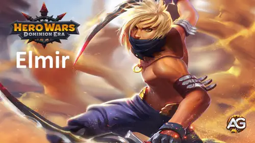
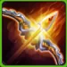
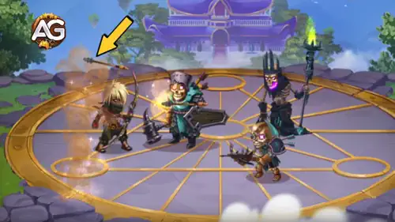
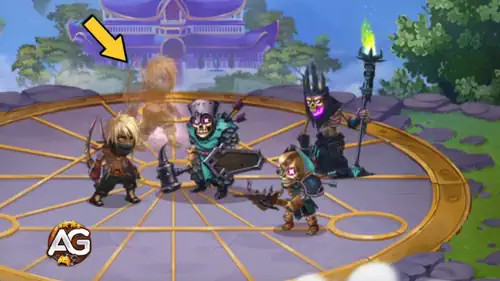
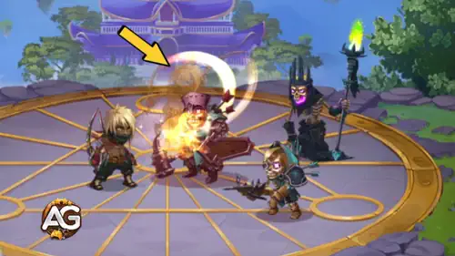
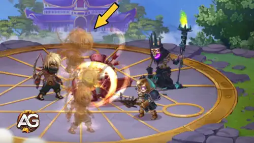
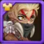
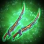
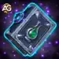
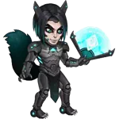

Vollständiger Elmir-Leitfaden für Hero Wars: Dominion Era
- Von: Alexandre Domingos. .
Elmir ist ein agiler Krieger und Scharfschütze, der sich mit geschickter Präzision in den Kampf stürzt. Seine Stärke liegt nicht in kritischen Treffern, sondern in konstantem, hohem Schaden und cleverem Positionsspiel.
Mit den Klingen der Vielen Wahrheiten an seiner Seite beweist sich Elmir als einzigartiger Held. Seine beschworenen Kopien unterstützen das Team, und seine Synergie mit Verbündeten wie Dorian macht ihn noch mächtiger.

Wer ist Elmir?
Elmir ist ein Frontkämpfer, der Geschwindigkeit, strategische Mobilität und Selbstduplikation vereint, um das Schlachtfeld in Hero Wars: Dominion Era zu dominieren.
- Klasse: Krieger / Schütze
- Position: Frontlinie
- Hauptattribut: Agilität
Was Elmir auszeichnet, ist seine Fähigkeit, hohen, zuverlässigen Schaden zu verursachen, ohne auf kritische Treffer angewiesen zu sein. Das macht ihn zu einem starken Konter gegen Helden, die Krit-basierte Builds blockieren oder bestrafen.
Seine erste Fähigkeit ermöglicht es ihm, sich hinter das Team zu repositionieren, was sein Überleben verbessert und gleichzeitig einen dynamischeren Kampfrhythmus schafft. In Kombination mit Dorian profitiert Elmir von Dorians Heilaura, die sowohl seine Überlebensfähigkeit als auch seine Effektivität steigert.
Elmirs Duplikate spiegeln nicht nur einen Teil seiner Kraft wider, sondern dienen auch als Frontlinien-Ablenkungen, die feindliche Massenkontroll-Bedrohungen wie K'arkhs Wurf reduzieren. Das macht ihn zu einer vielseitigen Wahl sowohl im Angriff als auch in der Verteidigung.
Vor- und Nachteile von Elmir – Hero Wars: Web und Facebook
✅ Vorteile
- Hoher Physischer Schaden: Elmir verursacht starken physischen Schaden, besonders wenn seine Klone aktiv sind und mehrere Ziele treffen.
- Klone Sorgen für Chaos: Seine Fähigkeit Trugbild beschwört Klone basierend auf feindlichen Positionen, was Gegner verwirrt und Treffer absorbiert, wodurch die Überlebensfähigkeit des gesamten Teams steigt.
- Flexibler Rolle (Schaden & Nutzen): Er kann sowohl als Schadensverursacher als auch als sekundärer Tank in einigen Aufstellungen fungieren, dank seines Positionsspiels und der Fähigkeit, eingehenden Schaden mit seinen Klonen aufzuteilen.
- Hervorragende Rüstungsdurchdringungs-Skalierung: Profitiert erheblich von Rüstungsdurchdringungs-Werten über sein Waffen-Artefakt und Glyphen, was Schaden gegen gepanzerte Feinde ermöglicht.
- Synergie mit Begleitern und Helden: Funktioniert gut mit Cain (steigert Ausweichen und Energie), Nebula (zur Unterstützung seiner Klone mit zusätzlichem Schaden) und Helden wie Jhu, Yasmine oder Keira in physischen Teams.
- Ausweichen Verbessert das Überleben: Seine Aussehen und Glyphen steigern das Ausweichen, was ihm hilft, kritische physische Angriffe zu vermeiden, besonders wirksam gegen Helden wie Ishmael oder Dante.
❌ Nachteile
- Schwach Gegen Magie-Teams: Mangelnde Magieverteidigung und seine Klone werden schnell durch Flächen-Magieangriffe eliminiert, was ihn anfällig macht gegen Helden wie Lars, Orion oder Helios.
- Geringe Klon-Haltbarkeit: Seine Klone skalieren nicht gut in der Spätphase und können schnell durch jeden Flächenschaden eliminiert werden, was ihre Nützlichkeit in langen Kämpfen einschränkt.
- Abhängig von Artefakt- und Glyphen-Entwicklung: Benötigt hohe Evolution bei Physischem Angriff und Rüstungsdurchdringung, um wirkungsvoll zu sein. Ohne gut entwickelte Glyphen und Artefakte ist sein Schaden enttäuschend.
- Nicht Meta-Dominant: Obwohl stark in bestimmten Aufstellungen, wird Elmir selten in Top-Tier-Teams gesehen im Vergleich zu anderen Kriegern wie Dante, Tristan oder Ishmael.
- Erfordert Positionskontrolle: Die Klon-Platzierung basiert auf feindlichen Positionen, was unvorhersehbar sein kann und ihre strategische Wirksamkeit in manchen Kämpfen reduziert.
Elmir Fähigkeiten-Upgrade-Priorität - Hero Wars: Dominion Era
Erfahre, welche Fähigkeiten von Elmir du zuerst verbessern solltest in Hero Wars: Dominion Era und wie jede Fähigkeit ihm im Kampf hilft.

1. – Treibsand
Dies ist Elmirs Hauptfähigkeit. Er springt in die Nachhut und wird für 10 Sekunden zum Fernkämpfer, wobei er einen Bonus auf physischen Angriff erhält. Dieser Zug ermöglicht es ihm, Gefahren zu vermeiden und seinen Schaden sicher aus der Distanz zu erhöhen.
Entwicklungspriorität: Sehr Hoch – Diese Fähigkeit definiert Elmirs Spielstil und steigert seinen Schadenausstoß erheblich. Sie sollte immer deine erste Priorität sein.

3. – Trugbild
Diese Fähigkeit erstellt einen Sandklon, der hilft, Feinde abzulenken. Der Klon hat 74 % von Elmirs Gesundheit und absorbiert Angriffe, wodurch deine echten Helden geschützt werden.
Entwicklungspriorität: Mittel – Nützlich für Verteidigung und Teamschutz, aber mit geringerem Einfluss auf den Schaden.

2. – Perfekte Klingen
Diese Fähigkeit gibt Elmirs Klonen die Fähigkeit anzugreifen. Sie erhöht den Gesamtschaden und macht die Klone bedrohlicher für Feinde.
Entwicklungspriorität: Hoch – Verbessert die Effektivität der Klone und erhöht den Gesamtschaden des Teams. Verbessere dies nach Treibsand.

4. – Viele Wahrheiten
Diese passive Fähigkeit gibt eine Chance, mehr Klone zu beschwören, wenn Elmir seine zweite Fähigkeit einsetzt. Sie funktioniert automatisch und hilft, Chaos auf dem Schlachtfeld zu verursachen.
Entwicklungspriorität: Niedrig – Hilfreich in manchen Situationen, aber abhängig davon, dass andere Fähigkeiten zuerst eingesetzt werden. Verbessere dies zuletzt.

Bestes Patronat für Elmir
Entdecke, welcher Begleiter Elmir die beste Kampfunterstützung und Patronat-Synergie bietet, um seinen Schaden und seine Überlebensfähigkeit zu maximieren.
1. Platz: Fenris
Fenris ist der beste Begleiter für Elmir dank seiner starken Synergie mit physischen Angreifern. Der Rüstungsdurchdringungs- und Physischer-Angriff-Bonus steigern Elmirs Gesamtschaden, und die Chance, Feinde zu blenden, fügt Kontrolle hinzu und verbessert Elmirs Überleben an der Frontlinie.
2. Platz: Cain
Cain ist eine gute Option für Elmir, wenn du auf Ausweichen-basiertes Überleben setzt. Da Elmir oft in die Nachhut springt und direkten Treffern ausweicht, hilft Cain ihm, schnell Energie zu generieren, was häufigeren Fähigkeitseinsatz ermöglicht. Allerdings ist er weniger offensiv als Fenris.
3. Platz: Vex
Vex kann situativ nützlich sein in Teams, die stark auf physischen Schaden setzen, da seine Tiefe-Wunden-Stapel den Schaden aller Verbündeten erhöhen. Dennoch führt Elmir nicht genügend schnelle Basisangriffe aus, um im Vergleich zu anderen Begleitern voll davon zu profitieren, was Vex zu einer Nischenwahl macht.
Beste Aussehen für Elmir Hero Wars: Dominion Era
Entdecke die optimale Reihenfolge der Aussehen-Entwicklung für Elmir basierend auf Kampfeffektivität und Synergie mit seinen Fähigkeiten.
Standard-Aussehen
Attributgewinn: Agilität +1.365
Jeder Agilitätspunkt gewährt zwei Punkte Physischen Angriff, einen Punkt Rüstung und einen zusätzlichen Punkt Physischen Angriff, wenn Agilität das Hauptattribut ist.
Entwicklungspriorität: Hoch – Da Agilität Elmirs Hauptattribut ist, verbessert dieses Aussehen seine offensive und defensive Leistung erheblich.
Winter-Aussehen
Attributgewinn: Physischer Angriff +7.120
Entwicklungspriorität: Sehr Hoch – Erhöht direkt Elmirs Schaden und die Angriffskraft seiner Klone. Dies ist das Aussehen mit dem größten offensiven Einfluss, ideal um den Burst-Schaden im Kampf zu maximieren.
Kybernetisches Aussehen
Attributgewinn: Rüstungsdurchdringung +10.650
Entwicklungspriorität: Mittel-Hoch – Hilft Elmir, mehr Schaden gegen gepanzerte Feinde zu verursachen, eine mächtige Option in Teams ohne Rüstungsdurchdringungs-Unterstützung.

Barbaren-Aussehen
Attributgewinn: Ausweichen +2.960
Entwicklungspriorität: Niedrig – Erhöht das Überleben gegen physische Angreifer, verbessert aber nicht den Schaden. Nützlich in Ausweichen-fokussierten Aufstellungen.
Dämonisches Aussehen
Attributgewinn: Ausweichen +2.960
Entwicklungspriorität: Niedrig – Gleiche Vorteile wie das Barbaren-Aussehen; wähle nach Verfügbarkeit oder ästhetischer Vorliebe. Bietet keinen zusätzlichen offensiven Wert.
Elmir Artefakt-Entwicklungspriorität Hero Wars: Dominion Era
Entdecke die optimale Entwicklungsreihenfolge für Elmirs Artefakte basierend darauf, wie jedes seinen physischen Schaden und seine Kampfeffektivität steigert.

1. - Waffen-Artefakt: Klingen der Vielen Wahrheiten
Attributgewinn: Rüstungsdurchdringung +50.190
Aktiviert sich 100 % der Zeit und hilft Elmir und seinen Klonen, die feindliche Rüstung zu durchdringen.
Entwicklungspriorität: Sehr Hoch – Dies ist Elmirs wichtigstes Artefakt. Der aktive Effekt der Waffe steigert die teamweite Rüstungsdurchdringung, wodurch Elmir und seine Klone deutlich mehr Schaden verursachen, besonders gegen Feinde mit hoher Verteidigung. Es verbessert direkt sein offensives Potenzial in jedem Kampf.

2. - Buch-Artefakt: Folio des Alchemisten
Attributgewinn: Rüstungsdurchdringung +16.731, Physischer Angriff +5.577
Entwicklungspriorität: Hoch – Obwohl passiv, verbessert der Bonus auf Rüstungsdurchdringung und Physischen Angriff Elmirs Schadenskonsistenz über die Zeit. Er ist wertvoll und ergänzt das Waffen-Artefakt gut.
3. - Ring-Artefakt: Ring der Agilität
Attributgewinn: Agilität +6.249
Entwicklungspriorität: Mittel – Dieses Artefakt steigert passiv Elmirs persönliche Werte. Obwohl es dem Team nicht direkt hilft, bietet es einen soliden ausgewogenen Boost. Verbessere es nach Waffe und Buch.
Elmir Glyphen-Entwicklungspriorität
Entdecke die beste Reihenfolge der Glyphen-Verbesserung für Elmir basierend darauf, welche Attribute seine Fähigkeiten und Gesamtkampfleistung am meisten steigern.

1. - Physischer Angriff Glyphe:
Erhöht den Schaden aller Fähigkeiten und Basisangriffe von Elmir, einschließlich der Angriffe seiner Klone.
Entwicklungspriorität: Sehr Hoch – Die Maximierung des Physischen Angriffs steigert direkt den Fähigkeitsschaden von Elmir und macht ihn zum wichtigsten Attribut für offensive Effizienz. Dies sollte immer dein erster Fokus sein.

2. - Rüstungsdurchdringungs-Glyphe:
Ermöglicht es Elmir und seinen Klonen, die feindliche Rüstung zu durchdringen und mehr effektiven Schaden zu verursachen.
Entwicklungspriorität: Hoch – Ein Schlüsselattribut, damit Elmir seinen Schaden gegen gepanzerte Helden aufrechterhalten kann. Starke Synergie mit den Klon-Angriffen und seinem Hauptwaffen-Artefakt.

3. - Agilitäts-Glyphe:
Jeder Agilitätspunkt erhöht den physischen Angriff (x2) und Rüstung. Elmirs Hauptattribut.
Entwicklungspriorität: Mittel – Verbessert sowohl Überleben als auch Schaden, aber langsamer als direkte Physischer-Angriff-Glyphen. Wichtig, aber nicht die höchste Priorität.

4. - Gesundheits-Glyphe:
Erhöht Elmirs maximale LP und bietet eine geringe Überlebensverbesserung, aber keinen offensiven Vorteil.
Entwicklungspriorität: Niedrig – Obwohl sie das Überleben leicht verbessert, trägt diese Glyphe nicht zur Hauptrolle von Elmir als Schadensverursacher bei.

5. - Ausweichen-Glyphe:
Gibt Elmir eine Chance, physischen Schaden zu vermeiden, was sein Überleben in bestimmten Begegnungen verbessert.
Entwicklungspriorität: Sehr Niedrig – Nützlich gegen physische Teams, besonders mit Cain, aber weniger zuverlässig und insgesamt wenig wirkungsvoll.
Wie man Elmir kontert – Hero Wars: Dominion Era
Erfahre, welche Helden Elmir in Hero Wars: Dominion Era effektiv kontern können, indem sie seine Fähigkeitsmechaniken und Schwächen auf dem Schlachtfeld ausnutzen.
Arachne

Arachnes Flächenschaden und Betäubungsfähigkeiten bestrafen Elmirs Klone schnell und stören seine Fähigkeit, das Schlachtfeld mit Illusionen zu überfluten.
Helios

Helios kontert kritische-Treffer-basierte physische Angreifer. Wenn Elmir mit Krit-Verstärkern kombiniert wird, bestraft Helios ihn und seine Klone mit Sonnenwind-Vergeltung.
Lars

Lars zeichnet sich durch massiven magischen Flächenschaden aus, der Elmirs Illusionen sofort auslöscht und seinen klonbasierten Kampfstil durchbricht.

Orions schnelle Magieangriffe und Energiegewinn bestrafen Elmirs schwache Magieverteidigung und eliminieren seine Kopien, bevor sie effektiv beitragen können.
Phobos

Phobos zielt auf den Feind mit dem höchsten physischen Angriff. Da Elmir seine eigenen Werte steigert, wird er oft zum Hauptziel und wird frühzeitig ausgeschaltet oder eliminiert.
Satori

Satoris Fuchsfeuer-Markierungen bestrafen Elmir für Energieboosts von Verbündeten wie Cain, was zu verheerender Vergeltung führt, wenn Elmir seine Fähigkeiten aktiviert.
Beste Kriegsflagge für Elmir Hero Wars
Elmir zeichnet sich durch physische Angriffe und anhaltenden Schaden aus, weshalb Kriegsflaggen mit Abklingzeitreduzierung und feindlichen Schwächungen im Kampf besonders wertvoll sind.

Kriegsflagge der Schnellen Krieger:
Diese Flagge beschleunigt die Fähigkeiten-Abklingzeiten für Krieger um 5 %, sodass Elmir seine mächtigen Fähigkeiten häufiger in Kämpfen einsetzen kann.
Nutzen für Elmir und das Team: Schnellere Abklingzeiten erhöhen Elmirs Schadensausstoß und Synergie mit anderen Kriegern, was die allgemeine Teamaggression und den Druck verstärkt.
Kriegsflagge des Frosts:
Diese Flagge reduziert periodisch die feindlichen Fähigkeitsstufen um 2, schwächt deren Fertigkeiten und erleichtert Elmir und dem Team die Kampfkontrolle.
Nutzen für Elmir und das Team: Die Reduzierung feindlicher Fähigkeiten ergänzt Elmirs Rolle bei der Störung von Gegnern, erhöht das Überleben und das Schadenspotenzial des Teams.

Kriegsflagge des Verfalls:
Reduziert die Heilung des feindlichen Teams um 10 %, begrenzt deren Ausdauer und erleichtert Eliminierungen durch Elmirs anhaltenden Schaden.
Nutzen für Elmir und das Team: Reduzierte feindliche Heilung erhöht die Wirksamkeit von Elmirs anhaltendem Schaden und verbessert das Eliminierungspotenzial des Teams in längeren Kämpfen.
Beste Teams für Elmir Hero Wars: Dominion Era
Beste Verteidigungsteams für Elmir
- Lyria, Elmir, Dante, Dorian, Jet, Cain
- Lyria, Elmir, Dante, Aidan, Jet, Axell
- Julius, Elmir, Lyria, Aidan, Jet, Fenris
- Aurora, Lyria, Elmir, Aidan, Jet, Cain
- Lyria, Ishmael, Elmir, Dorian, Jet, Fenris
Beste Angriffsteams für Elmir
- Cain, Jet, Dorian, Dante, Elmir, Lyria
- Axell, Jet, Aidan, Dante, Elmir, Lyria
- Fenris, Jet, Aidan, Elmir, Lyria, Julius
- Cain, Jet, Aidan, Elmir, Lyria, Aurora
- Fenris, Jet, Dorian, Elmir, Ishmael, Lyria
Ehrliche Schlussfolgerung über Elmir von Alexandre Domingos
Elmir ist ein selten genutzter Held im aktuellen Meta. Seine Sandklone wirken fragil und werden im Kampf schnell eliminiert. Ihn mit einem sekundären Team einzusetzen ist ein kluger Ansatz. Elmir synergiert gut mit Dorians Vampirismus, und jetzt mit der neuen Heldin Lyria, die dem stärksten physischen Angreifer Vampirismus verleiht, entsteht eine vielversprechende Kombination, die Elmir wieder zum Glänzen bringen könnte.
Entdecke neue Fähigkeiten mit unseren vorgestellten Helden!


Hinterlasse Deine Meinung!
Hat dir unser Elmir-Leitfaden für Hero Wars Web und Facebook gefallen? Gibt es etwas, das du nicht verstanden hast oder möchtest du Änderungen vorschlagen? Wir laden dich ein, unserem Kommentarbereich auf der Alexandre Games Blog-Seite beizutreten. Teile gerne deine Meinung, kläre deine Fragen und teile deine Vorschläge.
Klicke auf den Button unten, um zu beginnen: